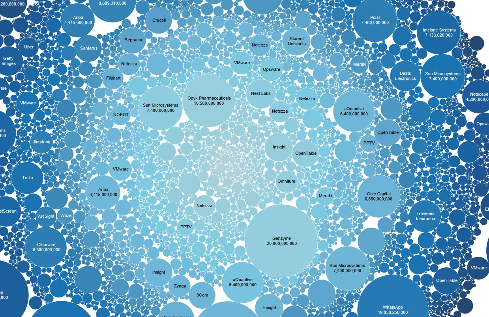

//
Developing A Website
This project had its roots during the summer before my senior year of high school. I was looking for colleges, but deciding where I wanted to be was
difficult. I’m going into a fairly new field, relatively speaking. Studying game development is quite a recent occurrence in academia. There was
little to no data on which schools had the best programs, especially for game developers who want to start their own companies. For-profit schools
like Full Sail University advertise heavily, but almost zero talent graduates from there. But I also didn’t want to spend 4 years studying computer
science – a lot of it isn’t relevant to my interests, and none of it is relevant to how to manage a dev team. I had to get data on my own.
Project C is two things: A website, and data analytics research. I spend quite a lot of time describing the analytics part within the project itself.
I suggest you go read that if you wish to have a better contextual understanding of the development process. I developed the website first. My initial
goal was to develop a portfolio in parallel to Project C, but later abandoned that idea in favor of THIS website.

Designing Project C’s user experience and layout was quite strenuous. I wanted something simple and easy to use that also differed from run-
of-the-mill “fresh” design templates most of the industry uses (ex. The ‘Squarespace’ look). I decided to modulate my design, allowing for 6
rotating articles the user scrolls through. I ended up with a result that makes sense to the user while distancing itself from tried-and-true
website design methods. Please keep in mind that this was 2 years ago. I have learned a lot about universal design and simplicity in the interim,
which is why you are looking at this on a new site and not the old one. It suffers from a few underlying issues. It isn’t mobile or touch friendly
and the lavish overuse of scripting lags slower computers and tablets. The site also hoards data like it is Smaug and large files are pure dwarven
gold. But I’m not so concerned about all that. I set out to design a good UI. That is exactly what happened, and in that sense, these flaws are irrelevant.
//
Sifting 200,000 Data Entries
After the site was built, I needed to fill it with data. Getting data is hard. Making sure the data is correct and relevant is harder. I spent well over a
hundred hours perfecting my code to collect the data set I used for Project C. It works by querying a massive database for hundreds of thousands of companies
(represented as JSON data). Then, it begins sifting through to determine which companies are relevant. I could only use complete data. There are always flaws
when dealing with a data set this large, so I threw out some of it.
The goal was to link the founders of companies to the schools they went to. That is easier said than done when not every company is started by one person
coming from one school. Sometimes a founder will have gone to multiple schools. Sometimes two founders will have attended different schools. What if one
founder doesn’t attend school and the other does? I had to teach my program how to handle these things. The result set contains just over 85,000 companies,
so I ran into almost every edge case possible. How do I handle for seed ventures that aren’t USD? What is the conversion rate for every currency I’m looking
at? Some companies only go through 1 round of funding, some go through 10. Some stay private, others go public quickly after launch. Do I include company
buyouts and acquisitions? Every one of these questions is something I distinctly remember having to deal with. As I’m writing, I’m remembering specific problems
that took me multiple late nights to debug and fix. Getting this data was an insanely difficult process. The source for all of my code is on github, and you can
view the final result by clicking the link above. The final site also has a lot more information and delves into far greater detail if you are interested.
Copyright © 2016 Daniel Timko